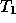
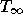
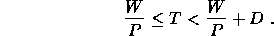
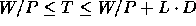
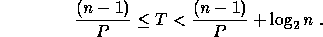
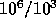
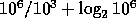
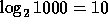

Work and depth can be viewed as the running time of an algorithm at two limits: one processor (work) and an unlimited number of processors (depth). In fact, the complexities are often referred to as

and
. In practice, however, we want to know the running time for some fixed number of processors. A simple but important result of Brent [9] showed that knowing the two limits is good enough to place reasonable bounds on running time for any fixed number of processors. In particular he showed that if we know that a computation has work W and depth D then it will run with P processors in time T such that

This result makes some assumptions about communication and scheduling costs, but the equation can be modified if these assumptions change. For example, with a machine that has a memory latency of L (the time between making a remote request and receiving the reply), the equation is

.Let's return to the example of summing. Brent's equation along with our previous analysis of work and depth (W = n-1, D = log2 n) tell us that n numbers can be summed on P processors within the time bounds

For example 1,000,000 elements can be summed on 1000 processors in somewhere between 1000 (

) and 1020 (
) cycles, assuming we count one cycle per addition. For many parallel machines models, such as the PRAM or a set of processors connected by a hypercube network, this is indeed the case. To implement the addition, we could assign 1000 elements to each processor and sum them, which would take 999 cycles. We could then sum across the processors using a tree of depth
, so the total number of add cycles would be 1009, which is within our bounds.
A problem with using work and depth as cost measures is that they do not directly account for communication costs and can lead to bad predictions of running time on machines where communication is a bottleneck. To address this question, let's separate communication costs into two parts: latency, as defined above, and bandwidth, the rate at which a processor can access memory. If we assume that each processor may have multiple outstanding requests, then latency is not a problem. In particular, latency can be accounted for in the mapping of the work and depth into time for a machine (see above), and the simulation remains work-efficient ( i.e. the processor-time product is proportional to the total work). This is based on hiding the latency by using few enough processors such that on average each processor has multiple parallel tasks (threads) to execute, and therefore has plenty to do while waiting for replies. Bandwidth is a more serious problem. For machines where the bandwidth between processors is very much less than the bandwidth to the local memory, work and depth by themselves will not in general give good predictions of running time. However, the network bandwidth available on recent parallel machines, such as the Cray T3D and SGI Power Challenge, is high enough to give reasonable predictions, and we expect the situation only to improve with rapidly improving network technology.